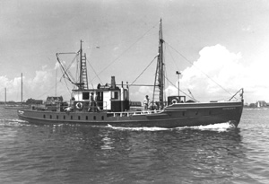

|  copyright - WHOI |
|
Anton Dohrn was given to the Woods Hole Oceanographic Institution in June 1940 for local-area scientific work. The vessel made at least 40 cruises from the Gulf of Maine to the coast of New Jersey, testing bathythermographs, underwater cameras, and other newly designed instruments, and conducting underwater sound transmission experiments and harbor studies. According to Dick Edwards, WHOI Marine Superintendent for many years, it took eight bilge pumps to keep Anton Dohrn afloat.
The vessel was sold in April 1947 and was to be used as a mail boat
between New Bedford and Cuttyhunk Island.